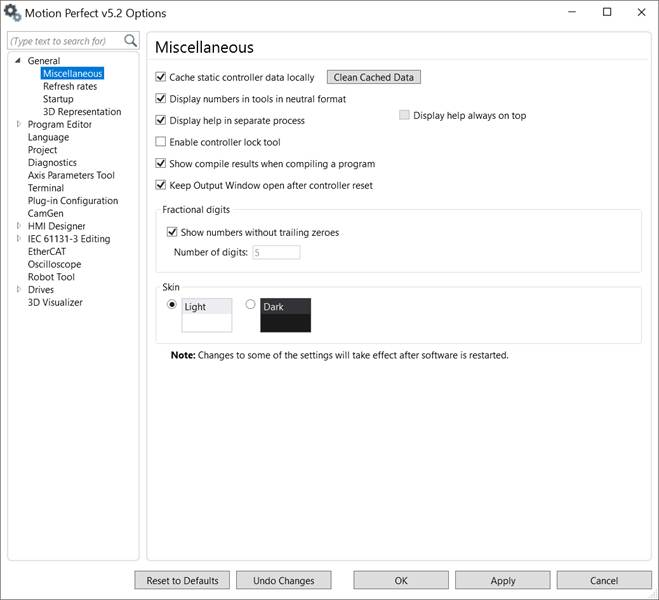

Options are available for the following:
Controller Static Data is data stored on the controller which tells Motion Perfect about the controller and its capabilities. If this is not set then Motion Perfect will have to read the data each time it connects to a controller. Caching is done when connecting in Tool or Sync modes and a set of data for each controller with each version of firmware is cached.
The “Clean Cached Data” button can be used to clear out all the cached data. This may need to be done if the cached data gets corrupted or a controller with development firmware is used.
It is recommended that caching is enabled.
This controls how numbers are displayed. If the box is checked then numbers are displayed using a fixed (USA type) format. Otherwise numbers are displayed using the format set by the locale of the Windows operating system.
Using the Windows locale setting may cause problems in some tools.
If this box is checked then a warning message will be displayed if the user tries to reset the desktop layout.
If this box is checked then the help file display application is run in a separate process. Doing this decreases the chance of unwanted interactions with the main application which can slow it down or, in rare cases cause hang-ups at the expense of increasing the time taken to display the help.
It is recommended that this is enabled.
Checking this box keeps the help file displayed on top of the application.
Checking this box allows the user to use the “Lock Controller” tool. This is disabled by default so as to reduce the chances of a user accidentally locking a controller.
Only enable this if you need to lock the controller with a lock code.
If this is checked the output window will remain open during a controller reset and hence capture the controller startup message.
It is recommended that this is enabled.
If this is checked and Windows is operating at a text rendering setting of something other than 100% then the graphics used within Motion Perfect will be scaled accordingly. This is of benefit using a very high resolution display but can result in the graphics being rendered in a fuzzy, indistinct way.
It is recommended that this is disabled unless you are using a very high resolution display and have to use a scaling of greater than 150%.
This controls the number of decimal places used when displaying real numbers.